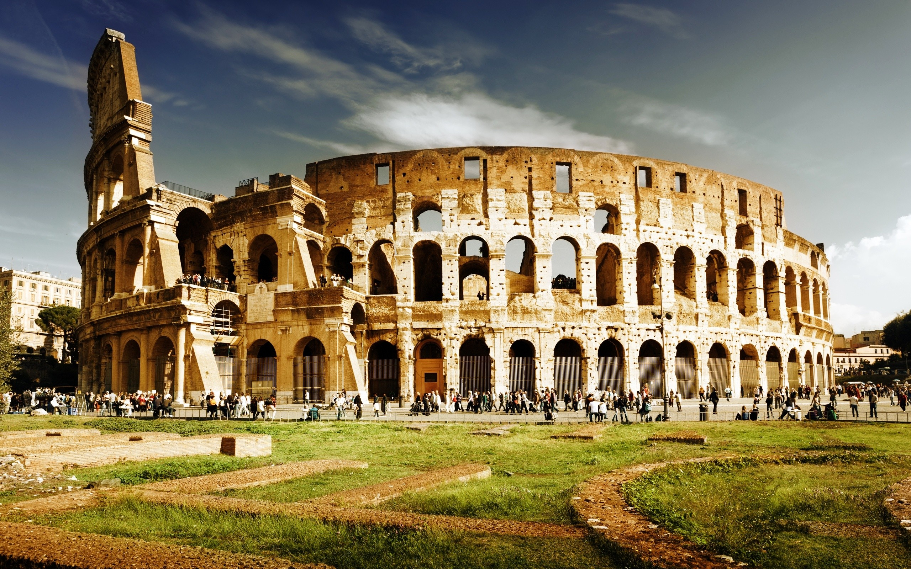
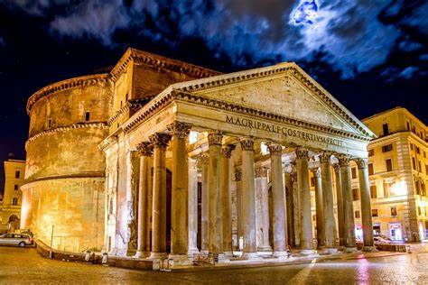
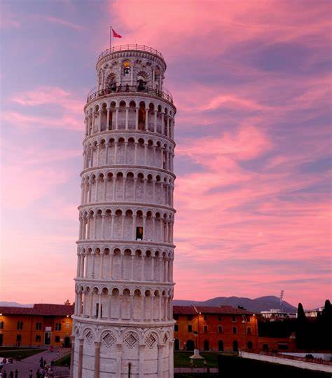
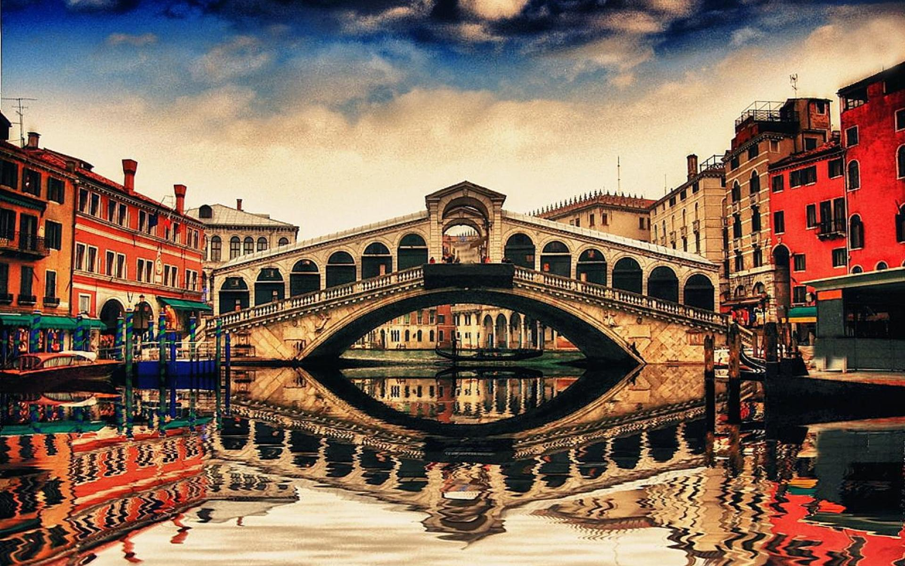

ITALY
COLOSSEUM
The Colosseum (/ˌkɒləˈsiːəm/ KOL-ə-SEE-əm; Italian: Colosseo [kolosˈsɛːo]) is an oval amphitheatre in the centre of the city of Rome, Italy, just east of the Roman Forum. It is the largest ancient amphitheatre ever built, and is still the largest standing amphitheatre in the world today, despite its age. Construction began under the emperor Vespasian (r. 69–79 AD) in 72[1] and was completed in 80 AD under his successor and heir, Titus (r. 79–81).[2] Further modifications were made during the reign of Domitian (r. 81–96).[3] The three emperors that were patrons of the work are known as the Flavian dynasty, and the amphitheatre was named the Flavian Amphitheatre (Latin: Amphitheatrum Flavium; Italian: Anfiteatro Flavio [aɱfiteˈaːtro ˈflaːvjo]) by later classicists and archaeologists for its association with their family name (Flavius).

PANTHEON
The Pantheon (UK: /ˈpænθiən/, US: /-ɒn/;[1] Latin: Pantheum,[nb 1] from Greek Πάνθειον Pantheion, "[temple] of all the gods") is a former Roman temple and, since 609 AD, a Catholic church (Basilica di Santa Maria ad Martyres or Basilica of St. Mary and the Martyrs) in Rome, Italy, on the site of an earlier temple commissioned by Marcus Agrippa during the reign of Augustus (27 BC – 14 AD). It was rebuilt by the emperor Hadrian and probably dedicated c. 126 AD. Its date of construction is uncertain, because Hadrian chose not to inscribe the new temple but rather to retain the inscription of Agrippa's older temple, which had burned down.

ROMAN FORUM
For centuries the Forum was the center of day-to-day life in Rome: the site of triumphal processions and elections; the venue for public speeches, criminal trials, and gladiatorial matches; and the nucleus of commercial affairs. Here statues and monuments commemorated the city's great men. The teeming heart of ancient Rome, it has been called the most celebrated meeting place in the world, and in all history.[2] Located in the small valley between the Palatine and Capitoline Hills, the Forum today is a sprawling ruin of architectural fragments and intermittent archaeological excavations attracting 4.5 million or more sightseers yearly

LEANING TOWER OF PISA
The Leaning Tower of Pisa (Italian: torre pendente di Pisa), or simply, the Tower of Pisa (torre di Pisa [ˈtorre di ˈpiːza; ˈpiːsa][1]), is the campanile, or freestanding bell tower, of Pisa Cathedral. It is known for its nearly four-degree lean, the result of an unstable foundation. The tower is one of three structures in the Pisa's Cathedral Square (Piazza del Duomo), which includes the cathedral and Pisa Baptistry.
The height of the tower is 55.86 metres (183 feet 3 inches) from the ground on the low side and 56.67 m (185 ft 11 in) on the high side. The width of the walls at the base is 2.44 m (8 ft 0 in). Its weight is estimated at 14,500 tonnes (16,000 short tons).[2] The tower has 296 or 294 steps; the seventh floor has two fewer steps on the north-facing staircase.

RIALTO BRIDGE
The first dry crossing of the Grand Canal was a pontoon bridge built in 1181 by Nicolò Barattieri. It was called the Ponte della Moneta, presumably because of the mint that stood near its eastern entrance.[4]
The development and importance of the Rialto market on the eastern bank increased traffic on the floating bridge, so it was replaced in 1255 by a wooden bridge.[4] This structure had two ramps meeting at a movable central section, that could be raised to allow the passage of tall ships. The connection with the market eventually led to a change of name for the bridge. During the first half of the 15th century, two rows of shops were built along the sides of the bridge. The rents brought an income to the State Treasury, which helped maintain the bridge.
